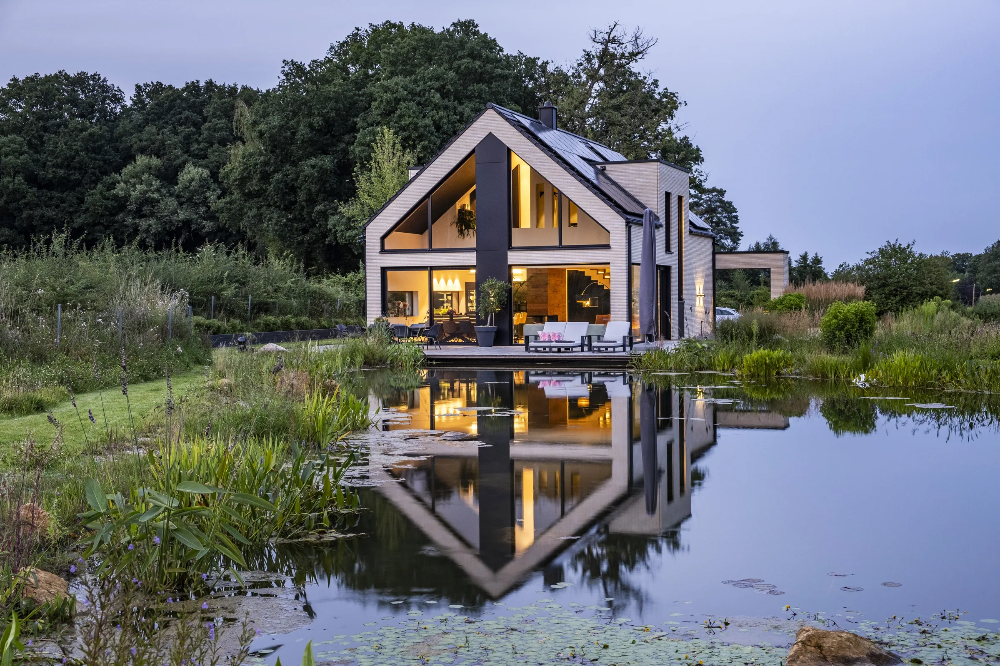
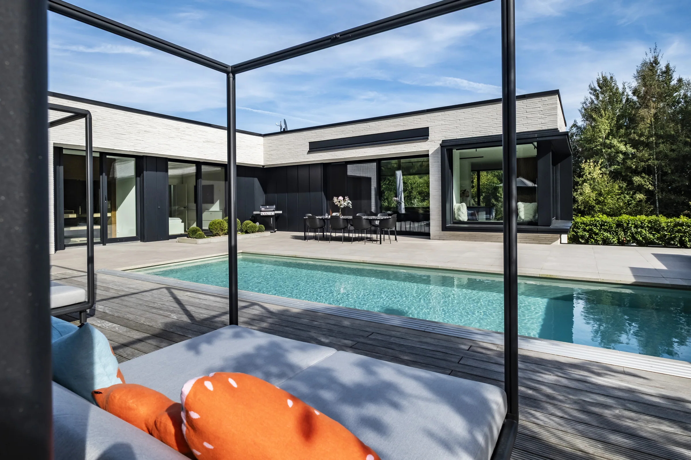
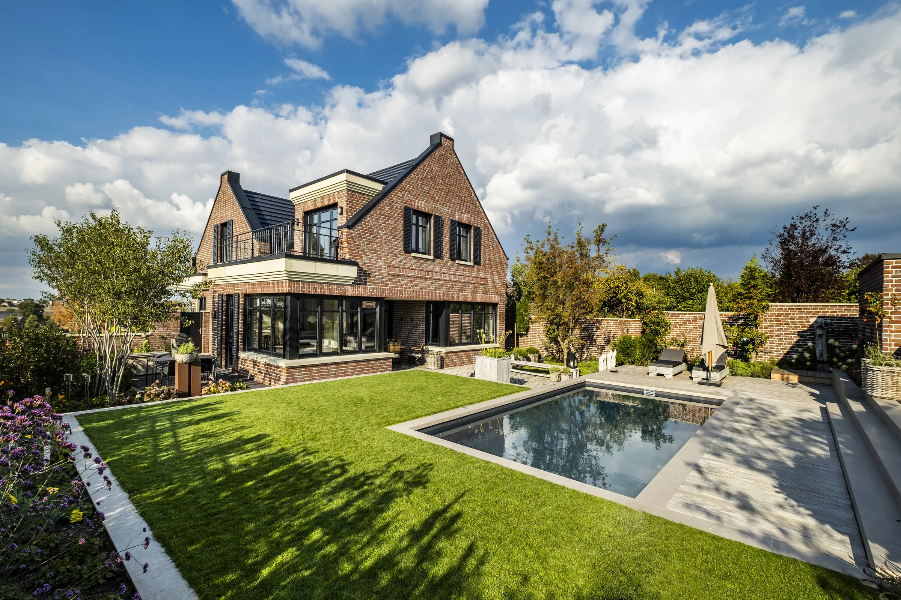
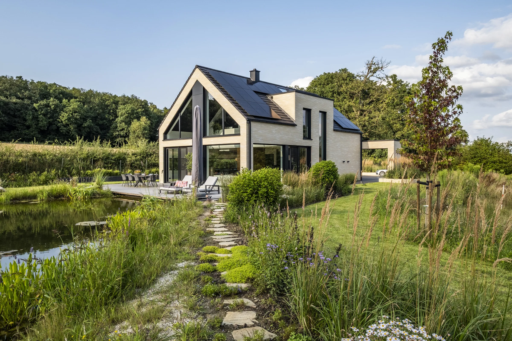
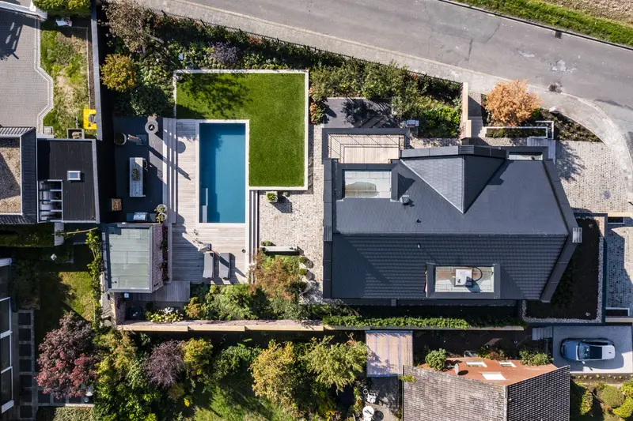
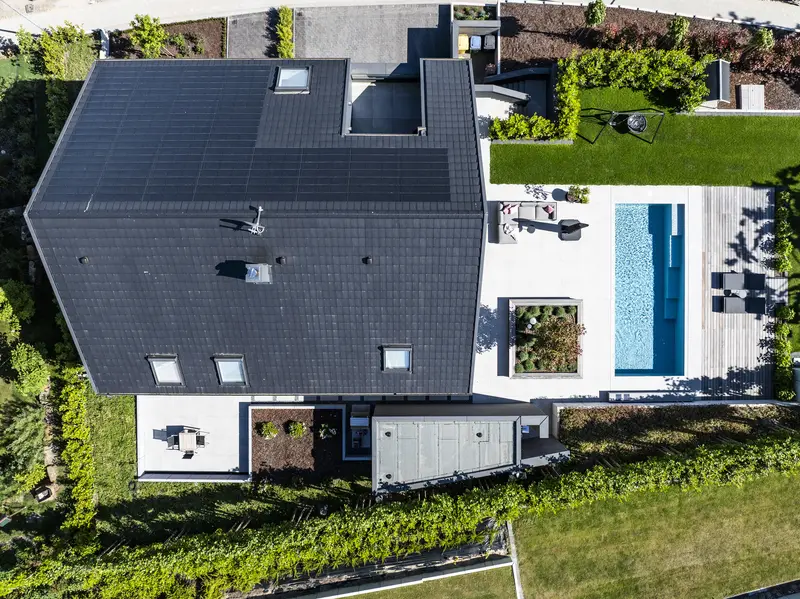
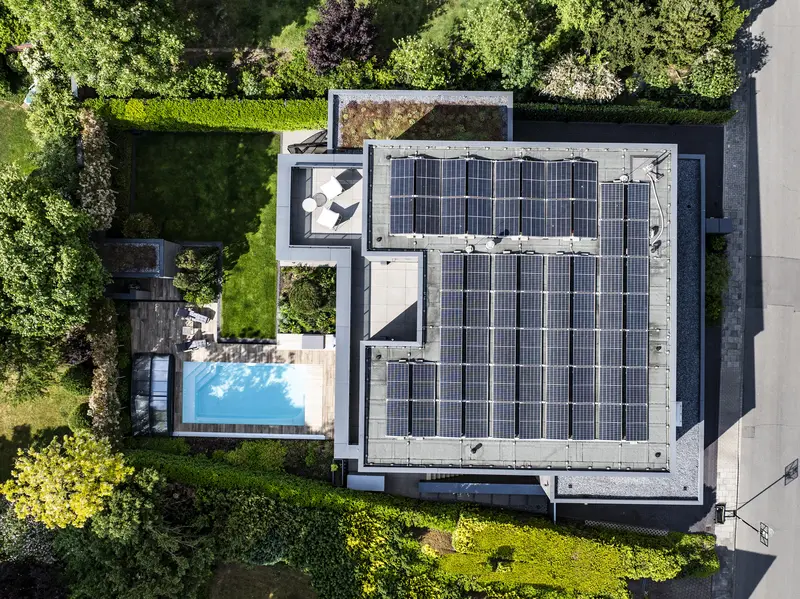
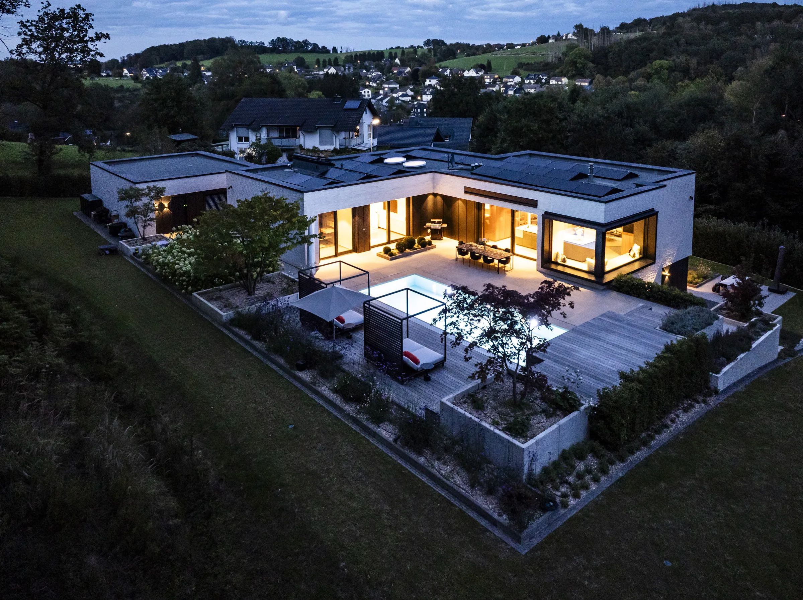
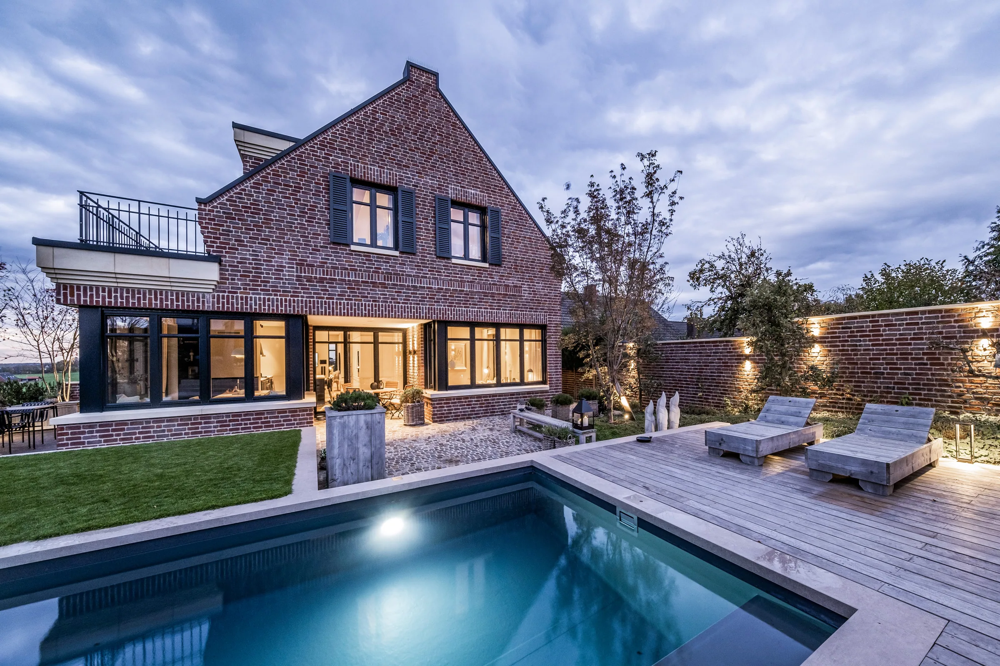
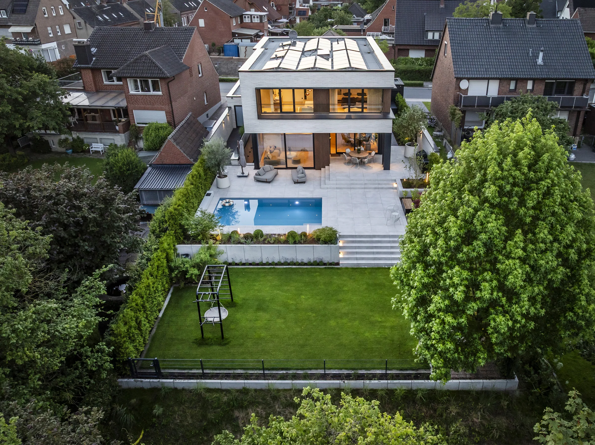

Der Garten gehört zum Haus.
Terrasse, Pool, Wege und Bepflanzung planen wir auf Wunsch gleich mit. Dann passt draußen zu drinnen: dieselben Linien, dasselbe Licht, dieselbe Sorgfalt.
Wasser

01 / 06Wasser und Holz, gerahmt vom Haus.Neues Leben am Hang

02 / 06Ein Deck, zwei Liegen, geschnittene Bäume.Architektur mit klarer Linie

03 / 06Terrasse in Stufen, der Pool auf halber Höhe.Offen zum Garten

04 / 06Altes Pflaster, Klinkermauer, davor das Wasser.Klassiker am Wasser

05 / 06Der Pool als Verlängerung des Wohnraums.Raum für Wohnen und Wellness

06 / 06Trittsteine führen durch die Stauden ans Wasser.Der Giebel im Wasser
Von oben
Haus, Terrasse, Wasser und Grün als ein Plan.
Vier Grundstücke, senkrecht und schräg von oben fotografiert. Man sieht, wie Haus und Garten zusammen entworfen sind.




Am Abend
Wenn das Licht angeht.
- Der Giebel im WasserBeleuchtetes Wohnhaus mit Glasgiebel spiegelt sich in der Dämmerung im Schwimmteich

Neues Leben am HangLuftbild am Abend mit beleuchtetem Winkelbungalow, Pool und Holzdeck
Klassiker am WasserKlinkergiebel mit Klappläden, beleuchtetem Pool und Holzdeck am Abend Schönheit am HangBeleuchtetes Satteldachhaus in der Dämmerung mit Pool und Holzdeck
Schönheit am HangBeleuchtetes Satteldachhaus in der Dämmerung mit Pool und Holzdeck
Offen zum GartenLuftbild am Abend mit beleuchtetem Haus, Pool und Garten Architektur mit fließenden ÜbergängenBeleuchtete Gartenseite mit auskragendem Obergeschoss, Holzdeck und Rasen in der Dämmerung
Architektur mit fließenden ÜbergängenBeleuchtete Gartenseite mit auskragendem Obergeschoss, Holzdeck und Rasen in der Dämmerung


Ihr Garten.
Haus und Garten zusammen planen? Erzählen Sie uns, was Sie vorhaben.
Bauvorhaben anfragenOder anrufen: 05973 / 90 923 0